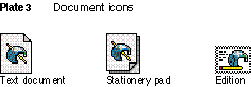

Inside Macintosh:
Macintosh Toolbox Essentials
/
Chapter 1 - Introduction to the Macintosh Toolbox
/
Overview of the Macintosh Toolbox
Color Plate 4

Color Plate 4
Document icons
© Apple Computer, Inc.
11 JUL 1996